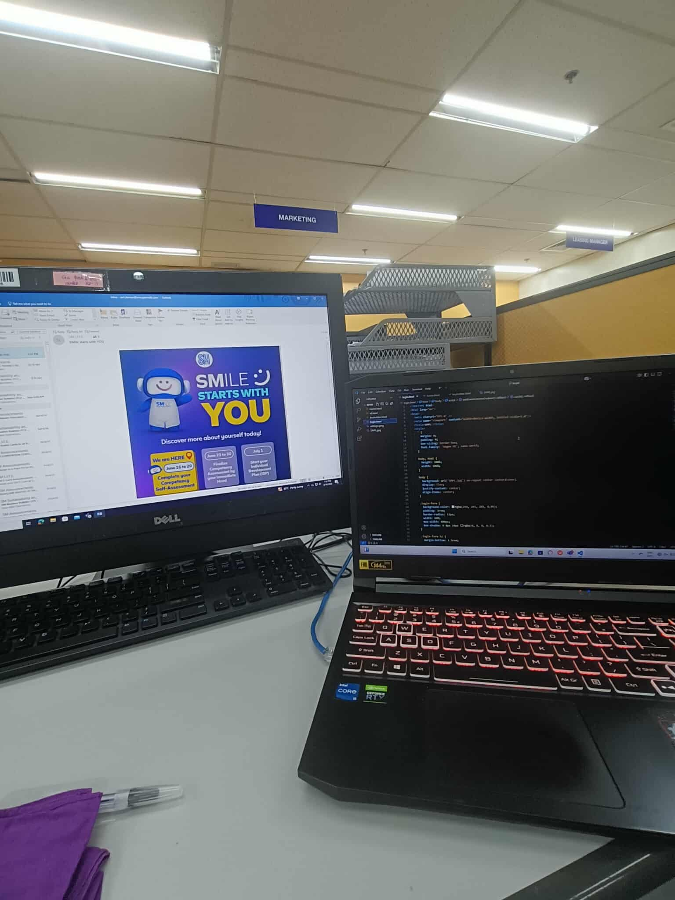
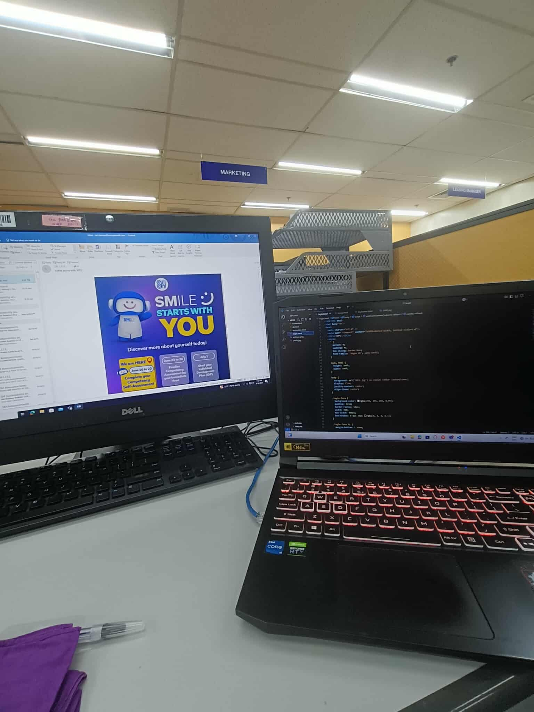
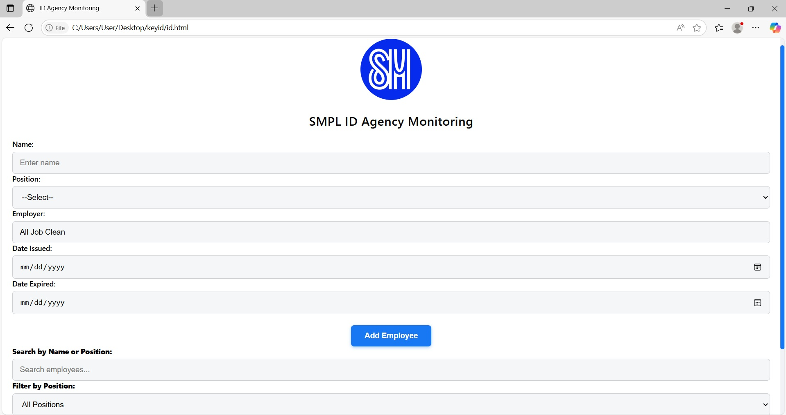
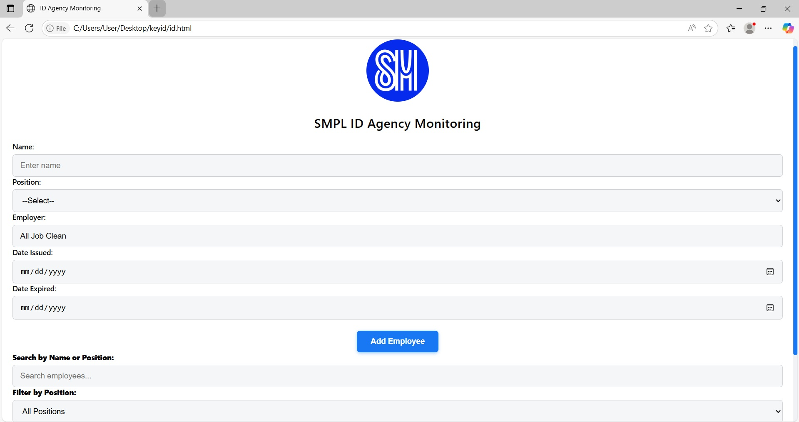

Mall Operations, Software & Technical Support Assistant
• Provided technical support to tenants using a ticketing system, delivered in-office and on-site assistance.
• Maintained and monitored server performance and security across the entire mall to ensure smooth operations.
• Handled software installations, system updates, and laptop deployments.
• Delivered end-user support for laptops and ensured reliable hardware and software functionality.
• Developed a Janitor Monitoring System that tracks janitors’ names, positions, promotions, and control numbers for easy reference. Also created a Key Holder Management System with full CRUD functionality for tenant/store key assignments, including a PDF conversion feature for printed guard reference — ensuring only authorized personnel can access store keys.
 



 
